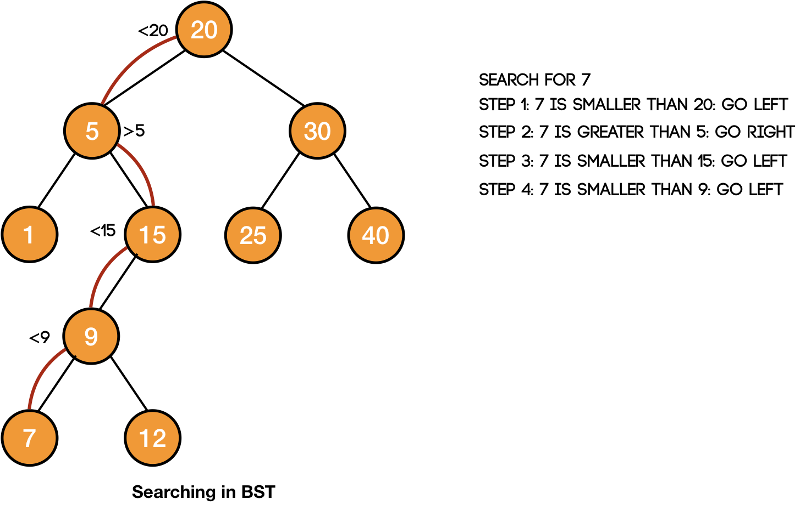

class TreeNode:
def __init__(self, data, left=None, right=None):
self.data = data
self.left = left
self.right = right
1. Search
2. Create TreeNodes & BinarySearchTree
# create node instances
node15 = TreeNode(15, left=None, right=None)
node35 = TreeNode(35, left=None, right=None)
node65 = TreeNode(65, left=None, right=None)
node85 = TreeNode(85, left=None, right=None)
node25 = TreeNode(25, left=node15, right=node35)
node75 = TreeNode(75, left=node65, right=node85)
node50 = TreeNode(50, left=node25, right=node75)
class TreeNode:
def __init__(self, data, left=None, right=None):
self.data = data
self.left = left
self.right = right
# 50
# 25 75
# 15 35 65 85
# create a basic tree
# class BinarySearchTree:
# def __init__(self, root_node:TreeNode):
# self.root_node = root_node3. Search: Psuedo-Code
Psuedo-Code: The algorithm for searching within a binary search tree is as follows:
- Designate a node to be the current node (usually root node)
- Inspect the value at the current node.
- If we’ve found the value we’re looking for, great!
- If the value we’re looking for is less than the current node, search for it in its left subtree.
- If the value we’re looking for is greater than the current node, search for it in its right subtree.
- Repeat Steps 1 through 5 until we find the value we’re searching for, or until we hit the bottom of the tree, in which case our value must not be in the tree.

4. Create Binary Tree
# create a basic tree
# 50
# 25 75
# 10 33 56 89
# 4 11 30 40 52 61 82 95
# Level: L4
node04 = TreeNode( 4, left=None, right=None)
node11 = TreeNode(11, left=None, right=None)
node30 = TreeNode(30, left=None, right=None)
node40 = TreeNode(40, left=None, right=None)
# Level: R4
node52 = TreeNode(52, left=None, right=None)
node61 = TreeNode(61, left=None, right=None)
node82 = TreeNode(82, left=None, right=None)
node95 = TreeNode(95, left=None, right=None)
# Level: L3
node10 = TreeNode(10, left=node04, right=node11)
node33 = TreeNode(33, left=node30, right=node40)
# Level: R3
node56 = TreeNode(56, left=node52, right=node61)
node89 = TreeNode(89, left=node82, right=node95)
# Level: L2
node25 = TreeNode(25, left=node10, right=node33)
# Level: R2
node75 = TreeNode(75, left=node56, right=node89)
# Level: L1
node50 = TreeNode(50, left=node25, right=node75)5. Search Node Function:
def search_node_of_bst(root_node: TreeNode, target:int):
print(f"Entered Fn: current_node[{root_node.data}], target[{target}]")
current_node = root_node
if not current_node.data:
print(f"{target} NOT FOUND! node[{current_node.data}]")
return False
if current_node.data==target:
# print(locals().items())
print(f"{target} FOUND! node[{current_node.data}]")
return current_node.data
if target < current_node.data:
try:
print(f"target[{target}] < node[{current_node.data}]:\n\tgoing left[{current_node.left.data}])")
current_node = current_node.left
except:
raise IndexError(f"{target} NOT FOUND!")
elif target > current_node.data:
try:
print(f"node[{current_node.data}] < target[{target}]:\n\tgoing right[{current_node.right.data}]")
current_node = current_node.right
except:
raise IndexError(f"{target} NOT FOUND!")
return search_node_of_bst(current_node, target)6. Test 1: target 61
search_node_of_bst(root_node=node50, target=61)Entered Fn: current_node[50], target[61]
node[50] < target[61]:
going right[75]
Entered Fn: current_node[75], target[61]
target[61] < node[75]:
going left[56])
Entered Fn: current_node[56], target[61]
node[56] < target[61]:
going right[61]
Entered Fn: current_node[61], target[61]
61 FOUND! node[61]617. Test 2: target 11
search_node_of_bst(root_node=node50, target=11)Entered Fn: current_node[50], target[11]
target[11] < node[50]:
going left[25])
Entered Fn: current_node[25], target[11]
target[11] < node[25]:
going left[10])
Entered Fn: current_node[10], target[11]
node[10] < target[11]:
going right[11]
Entered Fn: current_node[11], target[11]
11 FOUND! node[11]118. Test 3: target 69
search_node_of_bst(root_node=node50, target=69)Entered Fn: current_node[50], target[69]
node[50] < target[69]:
going right[75]
Entered Fn: current_node[75], target[69]
target[69] < node[75]:
going left[56])
Entered Fn: current_node[56], target[69]
node[56] < target[69]:
going right[61]
Entered Fn: current_node[61], target[69]--------------------------------------------------------------------------- AttributeError Traceback (most recent call last) Cell In[11], line 22, in search_node_of_bst(root_node, target) 21 try: ---> 22 print(f"node[{current_node.data}] < target[{target}]:\n\tgoing right[{current_node.right.data}]") 23 current_node = current_node.right AttributeError: 'NoneType' object has no attribute 'data' During handling of the above exception, another exception occurred: IndexError Traceback (most recent call last) Cell In[14], line 1 ----> 1 search_node_of_bst(root_node=node50, target=69) Cell In[11], line 27, in search_node_of_bst(root_node, target) 24 except: 25 raise IndexError(f"{target} NOT FOUND!") ---> 27 return search_node_of_bst(current_node, target) Cell In[11], line 27, in search_node_of_bst(root_node, target) 24 except: 25 raise IndexError(f"{target} NOT FOUND!") ---> 27 return search_node_of_bst(current_node, target) Cell In[11], line 27, in search_node_of_bst(root_node, target) 24 except: 25 raise IndexError(f"{target} NOT FOUND!") ---> 27 return search_node_of_bst(current_node, target) Cell In[11], line 25, in search_node_of_bst(root_node, target) 23 current_node = current_node.right 24 except: ---> 25 raise IndexError(f"{target} NOT FOUND!") 27 return search_node_of_bst(current_node, target) IndexError: 69 NOT FOUND!